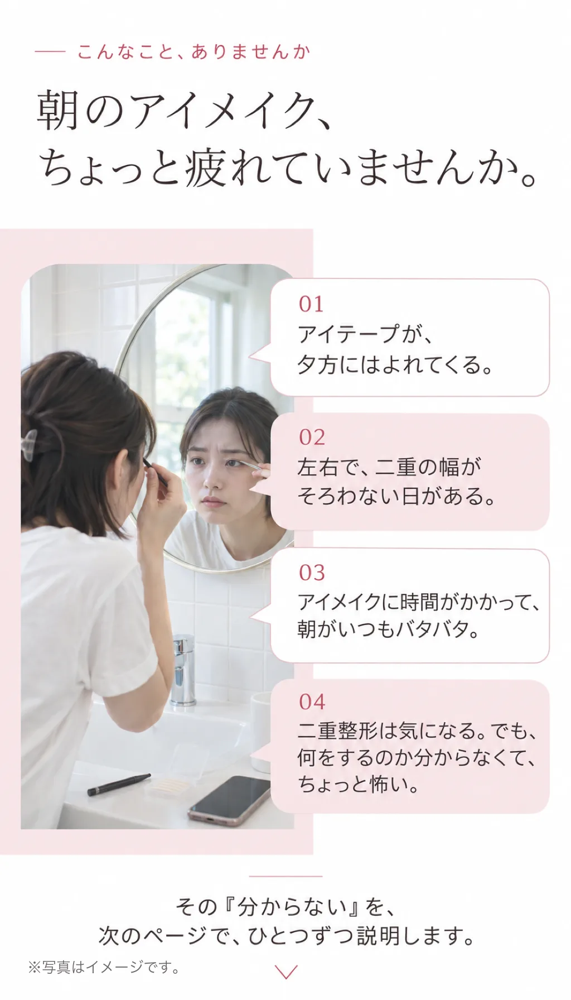
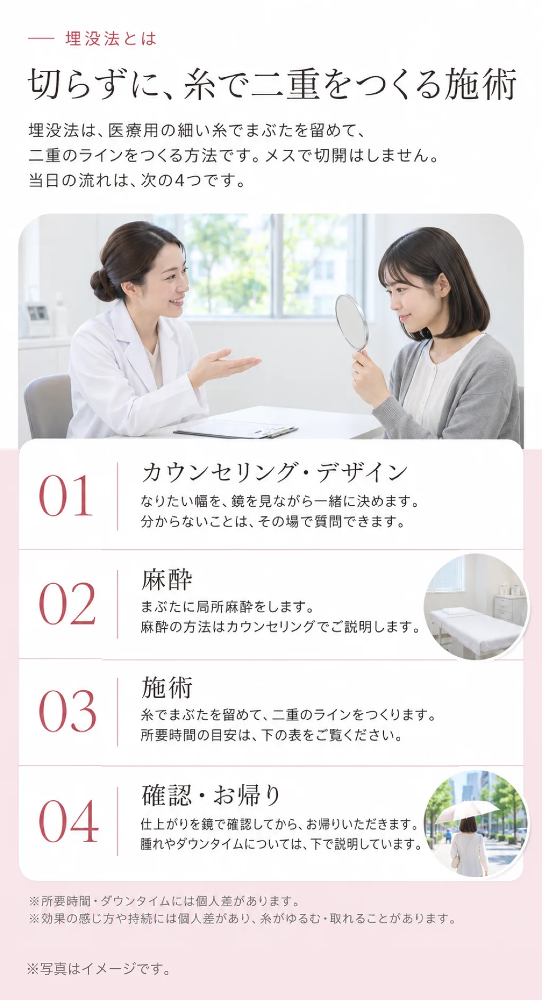
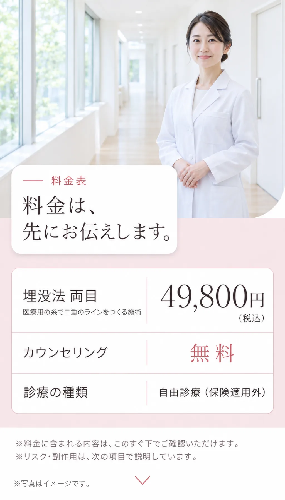
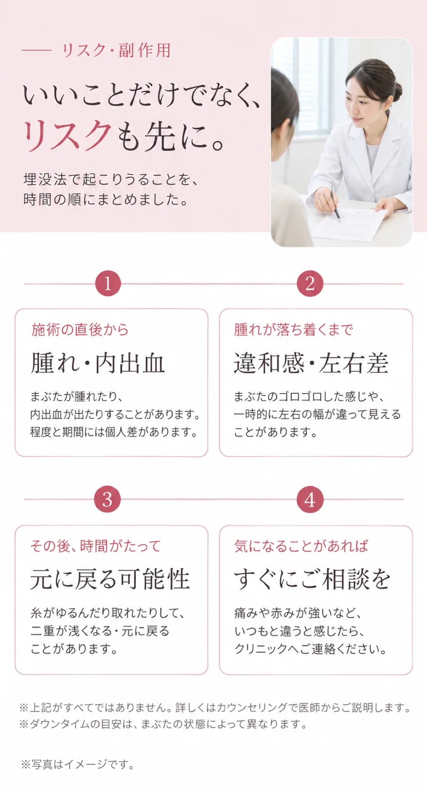
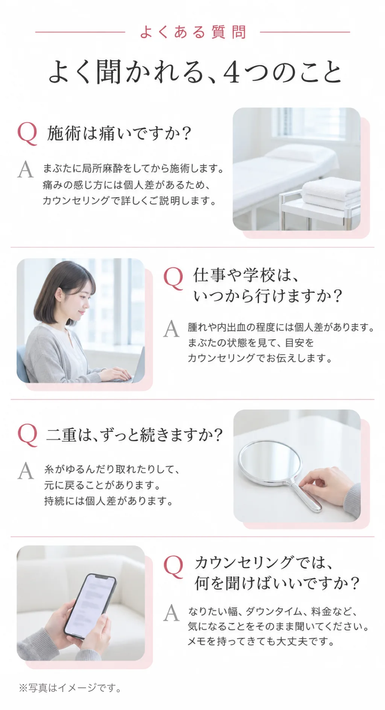
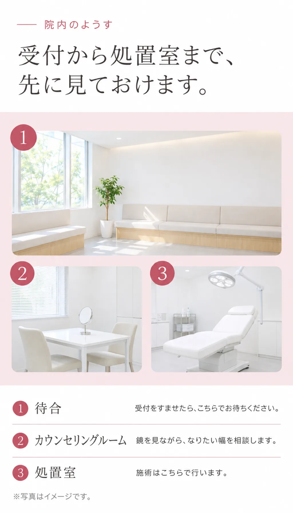

はじめての二重は、相談からでいい。埋没法の無料カウンセリング。疑問も不安も、まずは話すところから。埋没法 両目 49,800円（税込・自由診療）。カウンセリング無料。
※麻酔・お薬代について：料金に含まれています。
※自由診療です。腫れ・内出血などのリスクと副作用は、このページの下部で説明しています。※写真はイメージです。
朝のアイメイク、ちょっと疲れていませんか。

- アイテープが、夕方にはよれてくる。
- 左右で、二重の幅がそろわない日がある。
- アイメイクに時間がかかって、朝がいつもバタバタ。
- 二重整形は気になる。でも、何をするのか分からなくて、ちょっと怖い。
埋没法とは：切らずに、糸で二重をつくる施術

- カウンセリング・デザイン：なりたい幅を、鏡を見ながら一緒に決めます。
- 麻酔：まぶたに局所麻酔をします。
- 施術：糸でまぶたを留めて、二重のラインをつくります。
- 確認・お帰り：仕上がりを鏡で確認してから、お帰りいただきます。
所要時間とダウンタイムの目安
| 施術の所要時間 | 約20分 |
|---|---|
| 来院〜お帰り | 約90分（カウンセリング・お会計を含む） |
| 腫れの目安 | 大きな腫れは3日〜1週間ほど。なじむまでは約1か月 |
| メイク・洗顔 | 洗顔は翌日から、アイメイクは1週間後から |
※所要時間・ダウンタイムには個人差があります。
料金は、先にお伝えします。

| 埋没法 両目 | 49,800円（税込） |
|---|---|
| カウンセリング | 無料 |
| 診療の種類 | 自由診療（保険適用外） |
料金に含まれるもの
- 施術料：含まれています
- 麻酔代：含まれています
- お薬代（痛み止め・抗生物質）：含まれています
- 術後の診察：1週間後の1回は無料です
- 保証：施術から1年以内に糸が取れた場合、医師の診察のうえ、同じ施術を1回無料で行います
※お支払い方法：現金・クレジットカード・医療ローン
症例写真
症例写真は、
- 施術内容
- 埋没法（両目）。医療用の糸でまぶたを留めて、二重のラインをつくる施術です。
- 施術の期間・回数
- 施術時間 約20分／1回。大きな腫れは3日〜1週間ほどです。
- 費用
- 49,800円（税込・自由診療）
- 主なリスク・副作用
- 腫れ、内出血、まぶたの違和感、一時的な左右差、糸のゆるみ・取れによって二重が浅くなる・元に戻ることがあります。感染などが起こることもあります。
※掲載する写真は個人の症例で、効果や仕上がりには個人差があります。写真は加工・修正せずに掲載します。
リスク・副作用：いいことだけでなく、リスクも先に。

埋没法の主なリスク・副作用
- 腫れ・内出血：施術の直後から、まぶたが腫れたり内出血が出たりすることがあります。程度と期間には個人差があります。
- 違和感・左右差：腫れが落ち着くまで、ゴロゴロした感じや、一時的に左右の幅が違って見えることがあります。
- 元に戻る可能性：糸がゆるんだり取れたりして、二重が浅くなる・元に戻ることがあります。
- その他：感染、糸が透けて見える、まぶたの裏の違和感などが起こることがあります。
※上記がすべてではありません。詳しくはカウンセリングで医師からご説明します。痛みや赤みが強いなど、いつもと違うと感じたら、クリニックへご連絡ください。
よくある質問

- 施術は痛いですか？
- まぶたに局所麻酔をしてから施術します。痛みの感じ方には個人差があるため、カウンセリングで詳しくご説明します。
- 仕事や学校は、いつから行けますか？
- 腫れや内出血の程度には個人差があります。まぶたの状態を見て、目安をカウンセリングでお伝えします。
- 二重は、ずっと続きますか？
- 糸がゆるんだり取れたりして、元に戻ることがあります。持続には個人差があります。
- カウンセリングでは、何を聞けばいいですか？
- なりたい幅、ダウンタイム、料金など、気になることをそのまま聞いてください。メモを持ってきても大丈夫です。
そのほかの質問
カウンセリングだけで帰ってもいいですか？
はい、大丈夫です。カウンセリング当日に施術を決める必要はありません。持ち帰ってゆっくり考えてから、改めてご予約いただけます。
料金のほかに、かかる費用はありますか？
施術料・麻酔代・お薬代と、1週間後の診察1回は料金に含まれています。糸を外す処置（抜糸）をご希望の場合は、別に費用がかかります。
未成年でも受けられますか？
18歳未満の方は、保護者の方の同意書が必要です。同意書はカウンセリングのときにお渡しします。
院内のようす：受付から処置室まで、先に見ておけます。

クリニック情報
| 医院名 | あおばね美容外科クリニック 新宿院 |
|---|---|
| 住所 | 東京都新宿区◯◯町1-2-3（架空） |
| アクセス | 新宿駅から徒歩5分（架空） |
| 診療時間 | 10:00〜19:00（最終受付 18:00） |
| 休診日 | 水曜日・年末年始 |
| お問い合わせ | 03-0000-0000／LINE |
| 管理者（医師） | 青羽 花子 |
地図は、制作例のため掲載していません。
ご予約の流れ：まずは、話を聞きに来てください。
- LINEで友だち追加：下のボタンから、クリニックのLINEを追加します。
- 日時を選ぶ：カウンセリングのご希望の日時を、LINEで送ります。
- 来院・カウンセリング：院内で、疑問や不安を直接聞けます。
※埋没法は自由診療です。両目 49,800円（税込）。